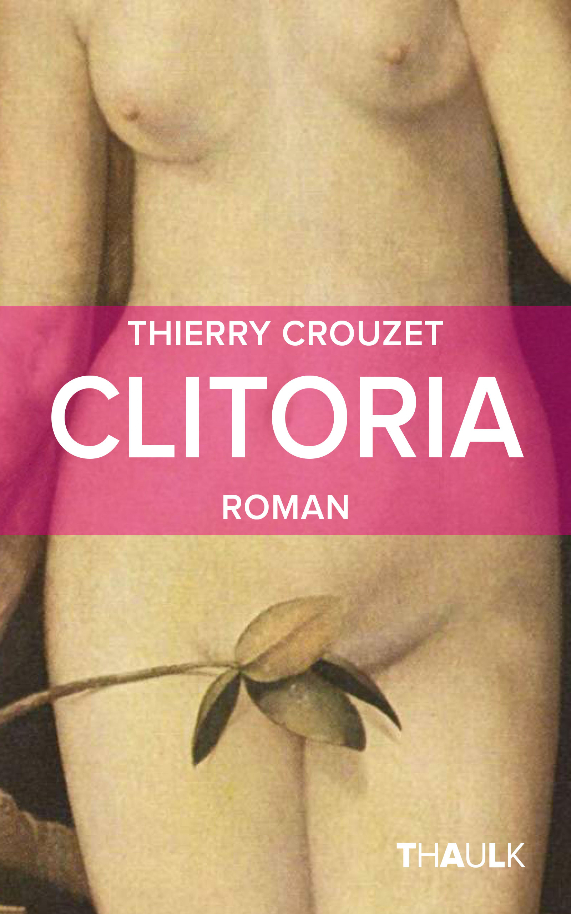

Clitoria

À l'origine du thermalisme
Extrait
ebook 2.99 € : Amazon, Apple, Bookeen, ePagine, Feedbooks, Fnac, Google, Immatériel, Kobo, LesLibraires.fr, Orange.papier 5.99 € : Amazon.
Le 15 septembre 1575, sous le règne nouveau de Henri troisième de France, fils de Catherine de Médicis, et alors que débute la cinquième guerre de religion entre protestants et catholiques, Nicolas Dortoman, professeur de médecine à l’université de Montpellier, découvre le clitoris.
Une parodie des thermes de Balaruc transposées au XVIe.
Fiche produit
- Éditeur : Thaulk (sortie 7 novembre 2014, seconde édition 22 février 2016)
- Genre roman
- Volume : 100 pages
- ISBN papier : 978-1-5025-1844-6
- ISBN ebook : 978-2-9193-5830-4
Clitoria en papier et ebook

Clitoria, version papier
Clitoria, planche de couverture
Sommaire | Texte publié vendredi 24 octobre 2014